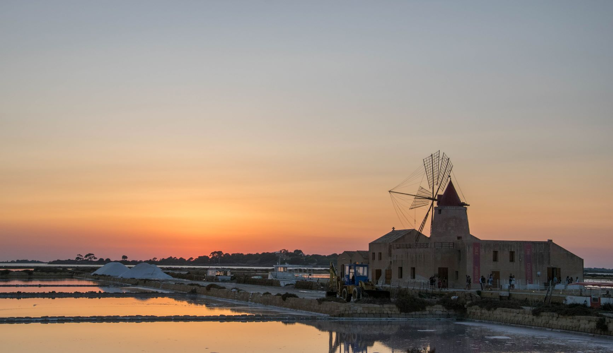

L'unico festival musicale che unisce la Sicilia

L'unico festival musicale che unisce la Sicilia
L'unico festival musicale che unisce la Sicilia

Il festival musicale più amato dai siciliani.
Torna lo Scuta ccà festival, il festival più amato dai siciliani!
Dopo la lunga pausa pandemica ritorna l'unico festival in grado di coinvolgere tutta la Sicilia grazia al suo animo itinerante.
Candida la tua provincia inviandocela tramite il form sottostante e ricordati che il festival è totalmente gratuito!
Le prime quattro province che risulteranno candidate da più di voi ospiteranno la nuova versione dello Scuta ccà festival!

"Tinturìa" da: monelleria/pigrizia
Gruppo nato nel 1996 a Raffadali
Rock, hip hop, ska
Candida qui la tua provincia.
Per informazioni:
Via Gela 300, Palermo, PA
Phone: +00 111222333
Email: scutaccàfest.PA@mail.com